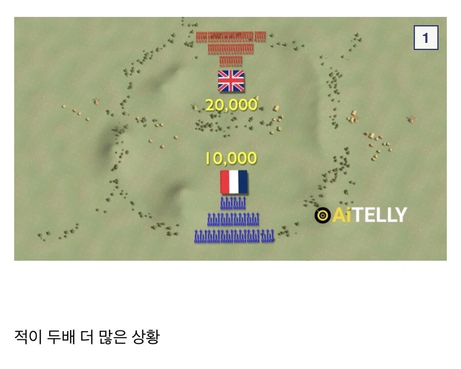
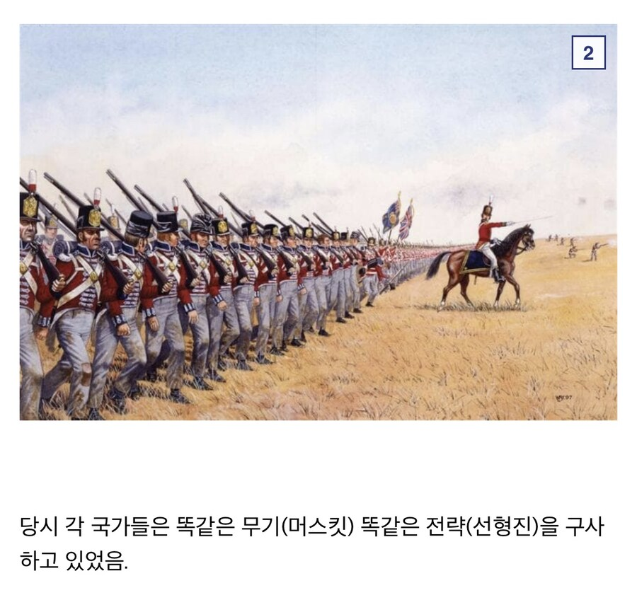
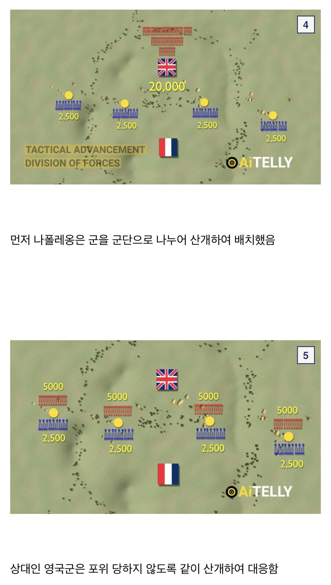
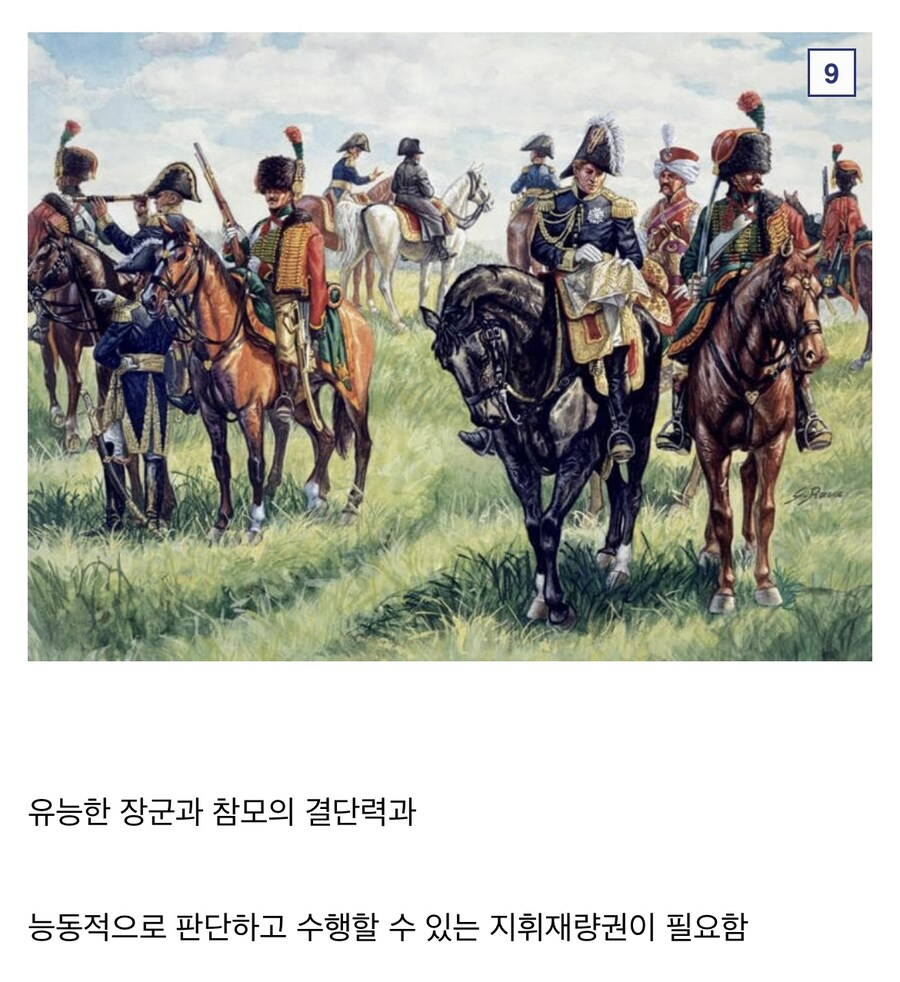
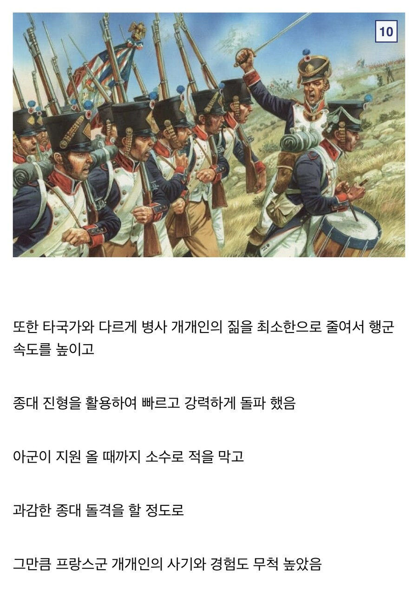

어떻게 했냐?





어떻게 했냐?
500 앞에 5000은 놀고있나 쉬벌...
지금 저거 하래도 못할거같은데 저 시대에 가능했다는게
씨바 그냥 존나 잘 한거잖아;;;;;;;;
아니 그럼 나머지 5000:500 은 어케버텼는데
잘
10배루 배불린척
나폴레옹에 대한 종교적 믿음.
조금만 버티면 폐하가 저 놈들 다 쓸러버릴거다. 우리는 가장 영광스런 임무를 맡은 부대다뽕.
다른 나라들 이거 흉내내면 다 도망감
그냥 유닛 빠르게 명령하기
저 때 전쟁도 참 웃겨 앞에서 총 쏘고 있는데 종대 진열 유지하면서 계속 걸어가야함
현대 기준으로는 어이없음
병사 개개인들의 사기를 어떻게 저정도로 키웟지 개신기하긴하네
10:1로 맞댈때는 어떻게??
3배차이부터는 숫자차이체감이 말도 안될텐데
거기다 병사들 존1나 뛰어다녀야함.
비신대 출동
저짓을 몰락시점에 젤 잘했던 게 아이러니
3만명으로 적 5만6천명과 싸워서 3천명 손실보고 적 1만7천명을 갈아버린
500이 5000상대로 버틴게 더 뒈단한데
영상에선 간단하게 표현됐지만 실전에선 몇 킬로미터씩 떨어져 있던 부대들이 전투할 때 딱 맞춰서 합류하는 거임.
당하는 입장에서는 앞에 있는 적이랑 막 싸우고 있는데 갑자기 옆에서 뒤에서 사단 여단급 부대들이 막 튀어 나와서 때리니 정신을 못차리다 섬멸되는 거.
알고리즘 잘 짰네